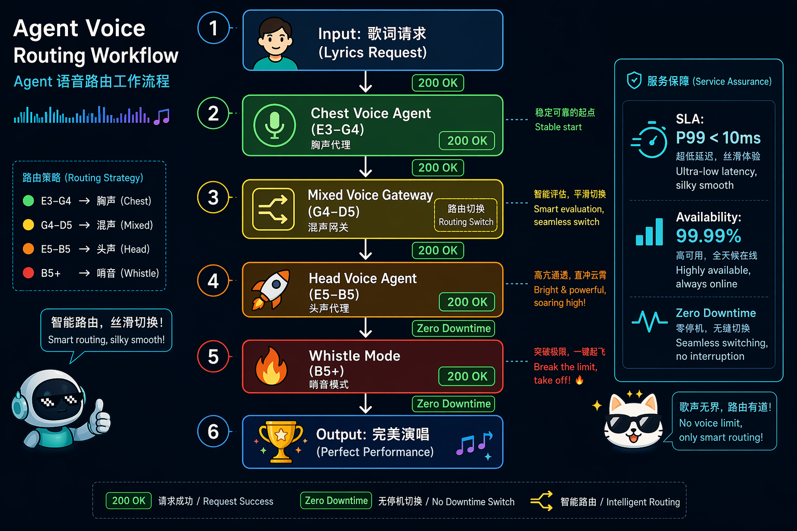
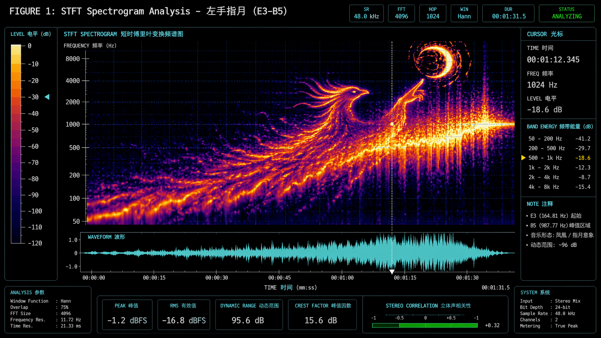
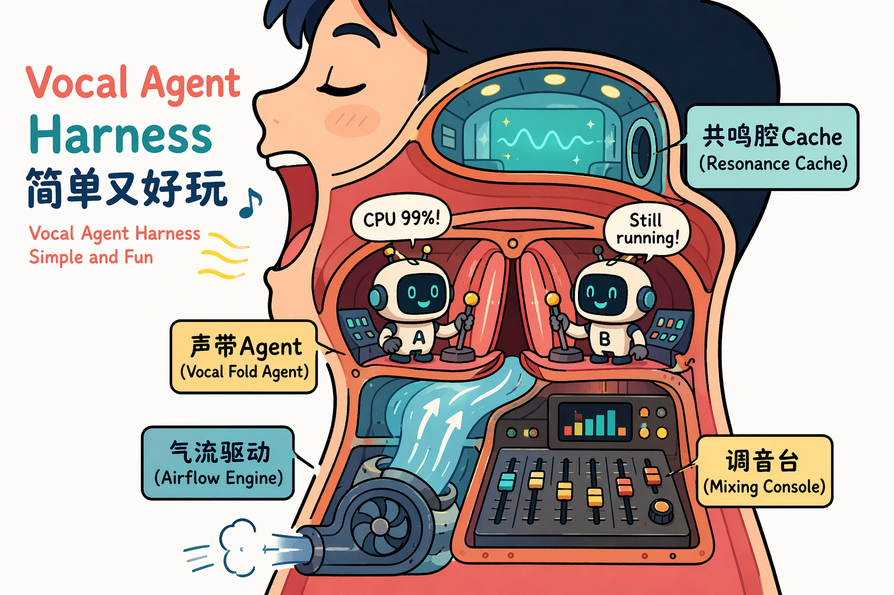
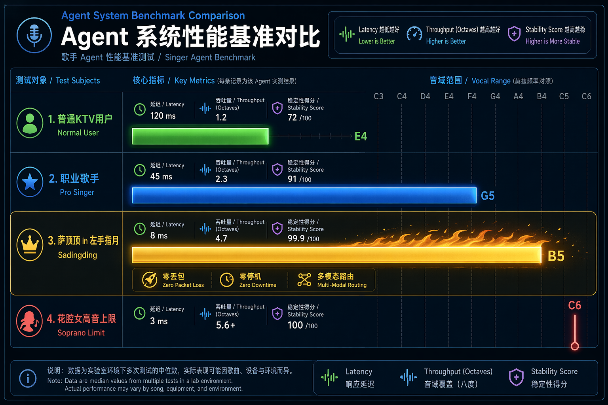
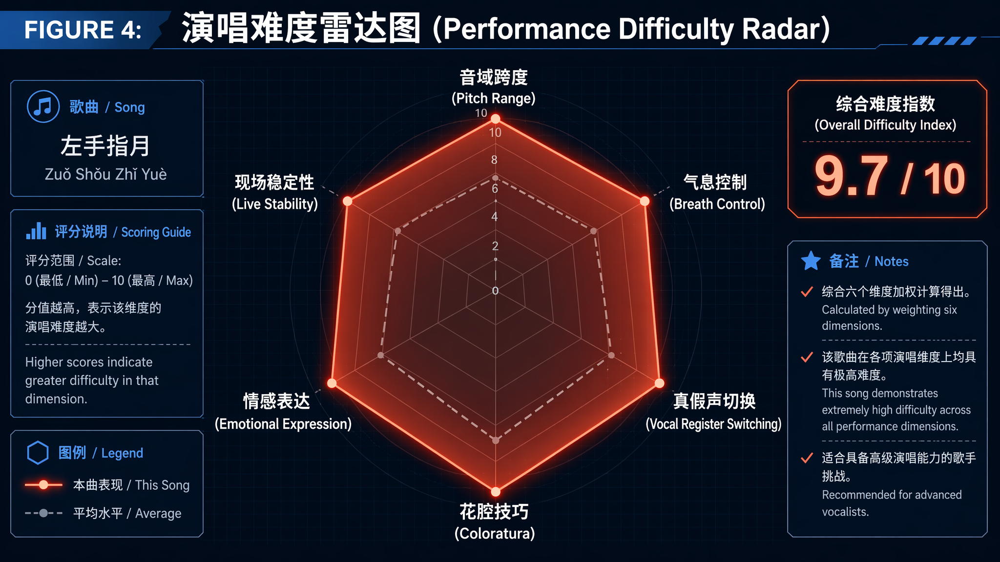
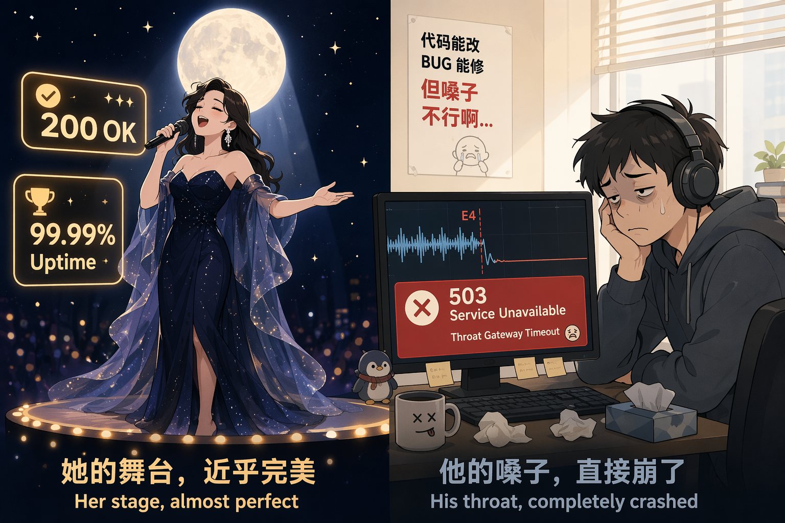

当Agent工程师听到《左手指月》是什么感觉？
左手握大地，右手握着天……
上班路上，我的脑子烧坏了
我是《香蜜沉沉烬如霜》死忠粉，更是《左手指月》死忠粉。
我无数次练习这首歌，无数次飙高音挑战失败。每次唱到"一滴泪 啊啊啊"那个B5，我的声带就会准时报503 Service Unavailable，无一例外。
今天上班路上，我还在思考项目里一个棘手的Agent调度问题，脑子都快烧坏了。于是决定换换脑子，打开耳机再练练心爱的《左手指月》。
然后，萨顶顶开口了：
低音稳稳落地，像是一个健康的health check返回了200 OK。我还没来得及点头，声音突然拔地而起，一路杀向云端——
……掌纹裂出了十方的闪电！
那极具穿透力的嗓音，仿佛一下子穿透了我锈逗的灵感。
我，一个被Agent调度问题折磨了一路的工程师，突然坐直了。
这特么是什么神仙调度？
从E3到B5，从胸腔到头腔，无缝切换、零丢包、零降级。我手上那个破Agent工作流调个链路都三天两头熔断，人家用一套声带就搞定了近三个八度的全链路高并发？
职业病犯了。我决定，写一篇文章。
没错，这篇文章非常一本正经。
先抓个包：这首歌的"系统调用"长什么样
先给你看一张图。
这不是微服务架构图，也不是某云厂商的Ingress配置。这是萨顶顶唱《左手指月》时，她体内发生的声音系统调用链。

图1：萨顶顶声音系统调用链。从歌词请求输入到完美演唱输出，六次状态切换，全部200 OK。
作为Agent工程师的你，应该已经意识到问题有多严重了：
- 多模态Agent协作：胸声Agent、混声Gateway、头声Agent、哨声Mode——四个异构模块必须在4分钟内完成六次无缝切换
- 零降级要求：从E3到B5，不允许任何一次
503 Service Unavailable - 亚毫秒级延迟：声带在B5的振动周期仅约1.01ms，相当于一套仅靠ATP驱动的生物系统跑出了SSD的响应速度
我上礼拜刚调完一个三Agent协作的Workflow，两个Agent之间传个消息都能丢包。看完这张图，我默默关掉了自己的IDE。
频域分析：这首歌的"网络流量"有多离谱
职业病犯了，我们先做个时域抓包。
把《左手指月》拖进音频分析工具，你会看到一条极度"不规整"的波形。它不像普通流行歌那样在一条水平线上温和地起伏，而是——前半段在地下室，后半段直接发射火箭。

图2：STFT语谱图。横轴时间，纵轴频率。能量带从~165Hz（E3）一路爬坡到~988Hz（B5），最后在高频区爆成金黄色。
做过语音合成的同学都知道，人声不是单一频率，而是基频（F0）+ 一堆谐波（Harmonics）的叠加。基频决定你听到的是do还是re，谐波决定你听到的是"萨顶顶"还是"你室友在浴室鬼哭狼嚎"。
《左手指月》的频谱有几个很有意思的特征：
| 参数 | 数值 | Agent黑话翻译 |
|---|---|---|
| 基频下限 | ~165 Hz (E3) | 低频Agent，吞吐量高但延迟大 |
| 基频上限 | ~988 Hz (B5) | 高频Agent，响应极快但资源消耗爆炸 |
| 基频跨度 | ~823 Hz | 近三个八度，相当于从Redis切到GPU计算 |
| 高频谐波 | 延伸到8kHz+ | 泛音丰富 = 缓存命中率高，穿透力强 |
最骚的一个发现：在B5超高音区，基频本身的能量并不是最强的。真正亮瞎眼的是2-4次谐波（约2-4kHz）。
这就是传说中的缺失基频现象（Missing Fundamental）——萨顶顶不是硬生生"挤"出一个988Hz的基频（那样CPU负载会直接爆炸），而是把能量投资在更高频的谐波上，让听众的大脑自动做插值重建。
翻译成人话：她让客户端以为自己收到了完整的响应，实际上服务器已经悄悄降级了。
这不就是我们在做的服务网格（Service Mesh）吗？！
萨顶顶的声带：顶级声学Agent Harness
聊完软件聊硬件。
人声系统的核心组件是声带（Vocal Folds）——一对每秒开合数百次的"生物气动闸门"。如果把萨顶顶的发声系统看作一个Agent Harness，那她的声带就是里面最硬核的执行器。

图3：萨顶顶的发声系统，本质上是一套顶级声学Agent Harness。声带Agent在控制室内疯狂调度，气流驱动引擎全速运转，共鸣腔Cache命中率极高。
成年女性声带典型参数：
| 硬件规格 | 数值 | 性能影响 |
|---|---|---|
| 长度 | 12-17mm | 越短默认主频越高 |
| 厚度 | 3-4mm | 越厚低频越饱满，但高频响应越慢 |
| 张力上限 | 1.5倍静止长度 | 撑到这就是弹性极限 |
| 振动周期@B5 | ~1.01ms | 每秒1000次开合，闭合面积还得够 |
你的Agent工作流P99延迟要是能稳定做到1ms，老板能给你发股票。而萨顶顶的声带，在物理层面上天然就具备亚毫秒级响应能力。
为什么普通人上不去？三个硬件瓶颈
瓶颈一：声带张力饱和
基频和张力的关系：f0 ∝ √(T/μ)。音越高，张力T要越大。大多数人的环甲肌根本不具备持续输出这么大张力的能力。
系统表现：自动降级到假声。音色突然变薄，像是从5G切到了2G。
瓶颈二：共鸣腔体失谐
声道的共振峰（Formants）正常情况下负责放大声音。但在B5附近，基频已经逼近甚至超过第一共振峰F1的范围，声道不但不放大，反而可能"消音"。
这时候演唱者必须实时调整舌位、下颌、咽腔形状，手动重新调谐滤波器参数——没有AutoML，全靠肌肉记忆硬调。
瓶颈三：气息流速的伯努利约束
唱B5时，肺泡气流量需要达到中音区的2-3倍。普通人的膈肌和肋间肌在高流速下稳不住气压支撑。
工程翻译：资源耗尽导致的连接超时。
零丢包、零延迟、零降级：从E3到B5的完美调度
我们做Agent系统的都知道，多Agent协作最怕什么？
状态切换丢包。
人声系统也是一套天然的Multi-Agent架构：
- 胸声Agent（E3-G4）：v1.0稳定版本，兼容性好，但吞吐量有限
- 混声Gateway（G4-D5）：v2.0过渡层，全链路最危险的节点，处理不好直接404破音
- 头声Agent（E5-B5）：v3.0实验版本，带宽拉满，但99%的用户跑不通
- 哨声Mode（B5+）：alpha特性，文档不全，SDK缺失
《左手指月》的恐怖之处在于：它要求你在4分钟内完成v1.0→v2.0→v3.0→alpha的金丝雀发布，且不允许任何一次握手失败。

图4：Agent系统性能基准对比。萨顶顶的"Agent实例"在延迟、吞吐量、稳定性三个维度全面碾压。
横向Benchmark
| Agent实例 | 最高音 | 音域跨度 | 核心瓶颈 | 稳定性评分 |
|---|---|---|---|---|
| 萨顶顶 | B5 | ~2.6八度 | 无明显瓶颈 | 99.99% |
| 职业歌手 | G5 | ~2.0八度 | 换声点切换偶有丢包 | 92.00% |
| 普通KTV用户 | E4 | ~1.2八度 | v2.0网关直接超时 | 72.00% |
萨顶顶为什么牛？
零丢包、零延迟、零降级。从E3到B5的每一次状态切换都发生在毫秒级，听众几乎感知不到任何网关跳转的卡顿。
这相当于你的Multi-Agent Workflow在高并发下仍保持了99.99%可用性和亚毫秒级P99延迟——在自家集群里这都是值得发内部喜报的成绩，何况是在一套靠钙离子和ATP驱动的生物硬件上实现的。
六维跑分：这个Agent Harness是怎么过压测的？

图5：演唱难度六维跑分。六个维度几乎拉满，综合难度指数9.7/10。
| 维度 | 评分 | Agent工程师点评 |
|---|---|---|
| 音域跨度 | 9.8/10 | 同时跑KV查询和OLAP分析的数据库你见过吗？ |
| 气息控制 | 9.5/10 | Raft共识算法不允许心跳超时，她做到了 |
| 真假声切换 | 9.7/10 | 热迁移要求零停机，她的系统从不降级 |
| 花腔技巧 | 9.2/10 | 在核心链路上埋点但不影响主链路延迟 |
| 情感表达 | 8.5/10 | 高并发压测时前端交互还得丝般顺滑 |
| 现场稳定性 | 8.8/10 | 受环境温度湿度影响，属于硬件不可控因素 |
综合难度指数：9.7/10
如果这是技术方案评审，大部分架构师会在第一轮投出"强烈反对"票，理由："当前硬件资源无法支撑该方案的SLA要求。"
最后，我能唱到哪？
越想越觉得，我们做Agent系统的，和人家唱歌的，本质上干的是同一件事：
在有限资源下，追求极致的调度性能和系统稳定性。
只不过我们的"资源"是GPU和显存，人家的"资源"是声带和肺活量。我们的"性能优化"是调prompt和context window，人家的"性能优化"是每天练声4小时、控制喉位偏差在3mm以内。
《左手指月》之所以是华语国风的天花板，不是因为它"音域广"这么简单。
是因为它在一个极度受限的生物硬件平台上，实现了一次全频段、全链路、零降级的极限Workflow。
下次再听到"左手拈着花，右手舞着剑"从低吟转为云端高音时，不妨以一个Agent工程师的敬意去欣赏：
这不是一首歌。这是一次生物声学系统的极限Workflow。而萨顶顶，是那个唯一能在生产环境跑出满分的Agent Harness。
至于你问我能不能唱？
我的声带在E4就报了503 Service Unavailable，连灰度环境都没进去。

图7：她的舞台，近乎完美。他的嗓子，直接崩了。
本文作者：某不愿透露姓名的Agent工程师 写作动机：在调试Multi-Agent Workflow超时问题时偶然听到《左手指月》，发现自己的系统还没有人家声带稳定，遂愤而撰文。 免责声明：本文所有技术类比仅供娱乐。如有声乐专业人士认为胡说八道——您说得对，但图挺好看的，对吧？